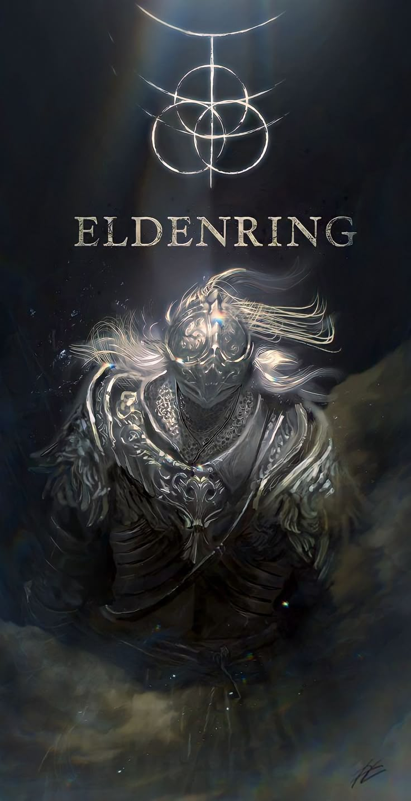

HTML
Estrutura de páginas para a web.

Olá, eu sou
Estudante de Ciência da Computação, aprendendo programação e desenvolvendo minhas habilidades em tecnologia.
Gosto bastante de tecnologia, computadores e tudo que envolve esse universo. Tenho interesse por hardware, montagem de computadores, testes de componentes e novas tecnologias. Também sou muito ligado ao universo geek, principalmente mangás, animes, jogos e à estética cyberpunk. Gosto bastante de desenhar, ouvir música e ler mangás. Inclusive, tenho uma coleção de mangás e action figures. Nos meus momentos livres, gosto de praticar Taekwondo e Judô, andar de bicicleta e explorar meus hobbies. Sou uma pessoa curiosa, gosto de aprender coisas novas e conhecer diferentes universos, seja por meio da tecnologia, dos jogos ou das histórias que acompanho.
Estrutura de páginas para a web.
Estilização e organização visual de sites.
Interatividade e funcionalidades nas páginas.
Lógica de programação e pequenos programas.
Fundamentos de programação e algoritmos.
Introdução a bancos de dados e consultas.

RPG de ação em um mundo de fantasia e exploração.
Uma história de mistério e fantasia sombria.
Aventura, lutas e personagens marcantes.
Uma jornada sobre amizade, esforço e superação.
Uma saga de ficção científica e aventura.
Animação sobre velocidade, amizade e competição.
Aventura e ação com uma equipe de ninjas.
Gosto de desenhar e explorar minha criatividade.
Pratico Taekwondo e Judô nos meus momentos livres.
Gosto bastante de ouvir música no meu dia a dia.
Adoro ler mangás e conhecer novas histórias.
Tenho uma coleção de mangás e action figures.
Gosto de montar computadores e testar componentes.
Gosto de andar de bicicleta nos momentos livres.